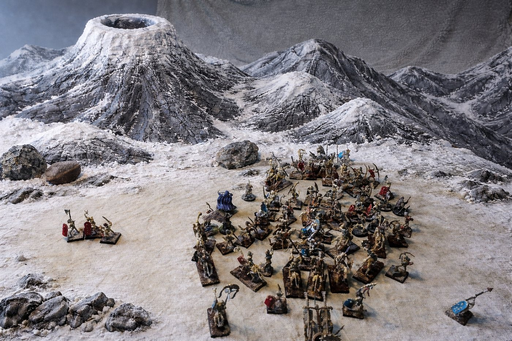

Les Landes Grises


- Le sud de l'ancien royaume, dévasté par la guerre des Grands Vassaux (683–699 CR), longtemps hanté.
- La Citadelle de Sacralia (chevaliers du Sacre, 706 CR) est près des ruines de Malvern.
- La Révérende Mère Alba, fondatrice du temple de la Déesse Douce, y a disparu en 767 CR.
- Libérée des morts-vivants par les héros (1004 CR). Les héros en ont la souveraineté, reconnue officiellement par le duc Ganelon de Bromaël.
- Des paysans des terres voisines s'y installent pour fuir l'impôt. Les héros prélèvent 25 % des récoltes.